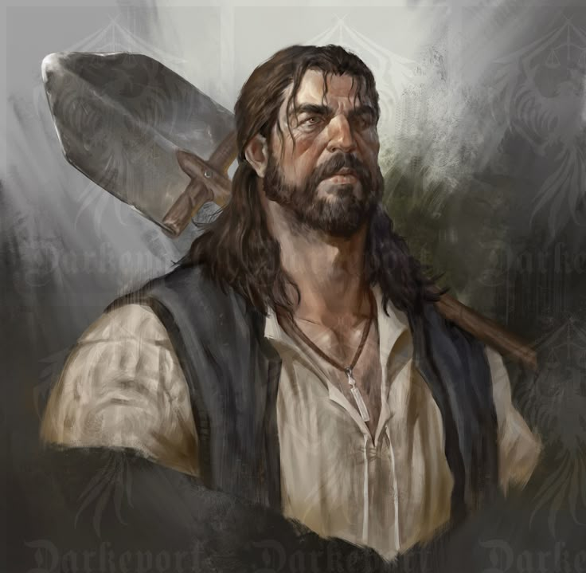
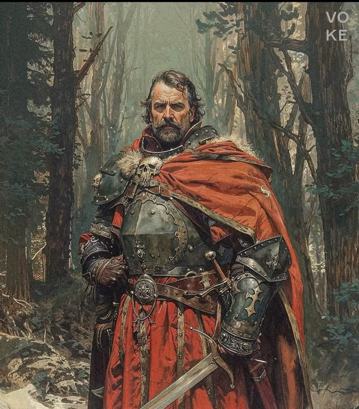
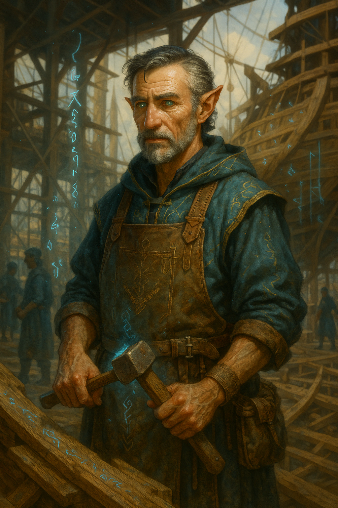
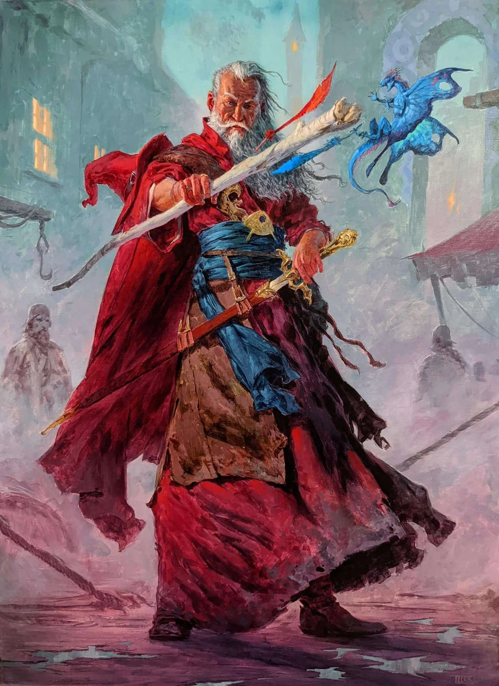

Characters#
Zorian Kazinski – The Runed Exile#
Zorian Kazinski is a half-elf mage of immense talent, originally from western Dameria. His life was shattered during the final stages of the Lilac Wars, when Lorentish forces razed his homeland and killed his family. In a moment of desperate instinct, he cast his first teleportation spell—an act that not only saved his life but set him on the path of magical mastery and exile.
Once a promising student of the Magisterium, Zorian was excommunicated for exploring forbidden schools of magic, particularly time and spatial manipulation. Since then, he has become a rogue practitioner, famed for his precise control over raw mana and his self-taught mastery of teleportation. He now serves as a high-ranking member of a secret organization, working to protect magically marked individuals and to establish a sanctuary in the rediscovered continent of Aelantir.
Zorian was the protégé of Elmisteer, a legendary elven mage and one of the founding figures of the Magisterium. Elmisteer is revered for his groundbreaking work in theoretical magic and his ability to construct complex spell arrays on the fly—eschewing memorized formulas in favor of pure logic. Under Elmisteer’s guidance, Zorian deepened his understanding of the nature of magic and mana. Seventy years ago, Elmisteer vanished into the East in pursuit of higher magical truths, disillusioned by the Magisterium’s focus on pragmatic spellcasting.
Recently, Zorian took part in a catastrophic magical battle in the village of Necklife, facing a cadre of powerful archmages—believed to be agents of Lorent or the Magisterium. Though he displayed formidable power, he was ultimately overwhelmed and captured. The aftermath left Necklife obliterated. The Magisterium blamed Zorian for the destruction, using it as a political tool to vilify him.
This event has sent shockwaves through the realm: the Emperor of Anbennar sees it as a Lorentish act of war, potentially sparking a full-blown international crisis. Zorian’s fate weighs heavily on the party—especially Erelas and Andrew, who feel a deep sense of guilt and responsibility. Despite his capture, Zorian’s legacy and vision continue to influence the group’s actions as they press onward toward Aelantir, carrying his mission—and his warnings—with them.
Arthus#
Arthus is the village leader of the settlement escaped from Damesear to Neckeliffe we don’t know much about him#
Small Jonas – The Insightful Rascal#

Small Jonas is a talkative and occasionally irritating presence aboard the party’s ship, yet beneath his endless chatter lies perceptive insights. Despite his frequent annoyances, Jonas offers valuable advice concealed within his rambling conversations, subtly guiding the group’s decisions as they journey towards Aelantir.
Swen – The Silent Protector#
Swen is a mysterious and reserved human aboard the ship, calling himself the protector. Skilled with the sword, he keeps largely to himself and rarely interacts directly with the party or other passengers. His motives and past remain enigmatic, but his capability and reliability in times of danger make him an essential ally.
William – The Shipwright Mage#
Paul is the skilled carpenter and shipbuilder working at Venail’s dockyard, tasked with reinforcing and preparing the party’s ship for their voyage across the ocean to the continent of Aelantir. Though not yet directly encountered by the party, he holds significant importance for their upcoming journey, providing crucial maritime expertise and craftsmanship necessary to ensure their vessel survives the long voyage.
Mathias – The Enthusiastic Apprentice#
Mathias is a young child aboard the ship, notably fond of Andrew and affectionately nicknaming GuG as “Big Rock.” He shows genuine curiosity and excitement towards magic, adventure, and the new continent. His optimistic and spirited personality brings warmth and joy to the challenging journey, representing hope for the party’s future in the new colony.
Elmisteer – Theoretical Mastermind#
Elmisteer is an iconic mage, celebrated as one of the original founders of the Magisterium and revered for his unparalleled theoretical mastery of magic. Known for his extraordinary intellect and meticulous approach, Elmisteer has dedicated his life to unraveling the deepest mysteries of mana and magic itself.
Elmisteer is especially famous for his remarkable skill of spontaneous spellcasting. Rather than memorizing spell formulas, he logically constructs and manipulates complex spell arrays on the fly, showcasing an astonishing grasp of magical principles. Deeply disdainful of practical magicians who neglect theoretical understanding, Elmisteer’s teachings emphasize thorough comprehension over mere practicality.
Having recognized Zorian Kazinski’s potential, Elmisteer adopted him as his apprentice, imparting invaluable lessons on magic’s intrinsic nature. Approximately seventy years ago, driven by dissatisfaction with the Magisterium’s prevailing attitudes and a thirst for greater knowledge, Elmisteer departed eastward, continuing his lifelong quest to deepen his already profound magical understanding.